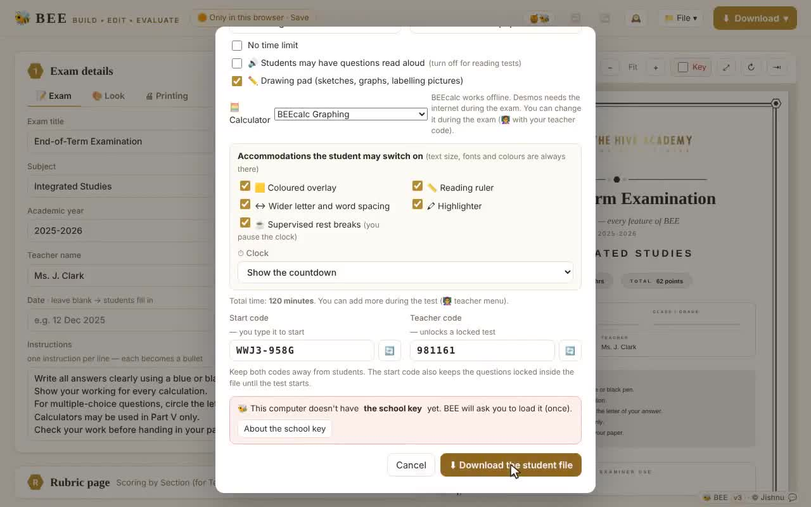
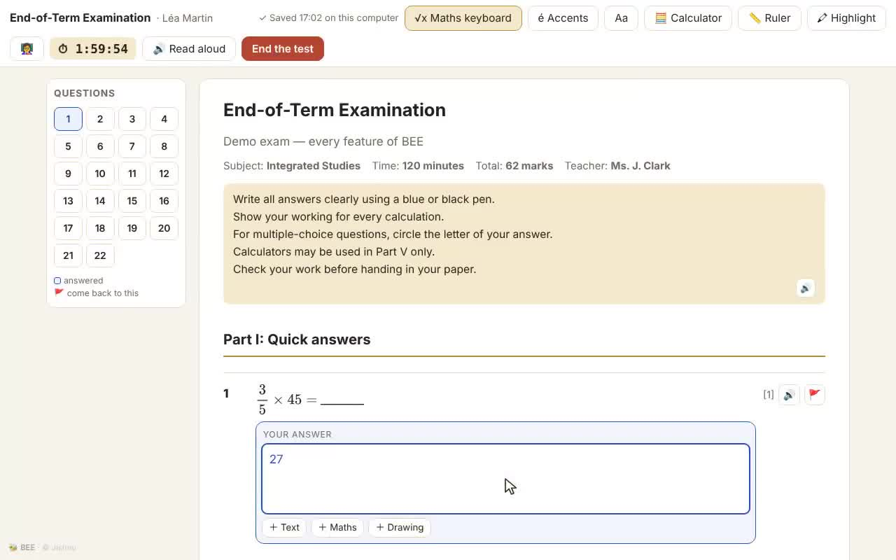
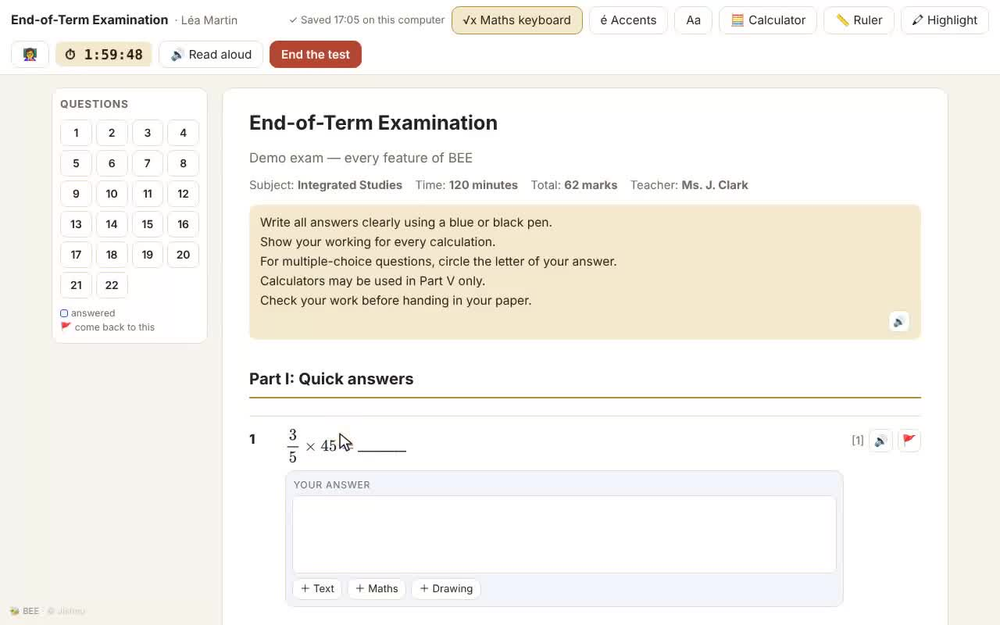
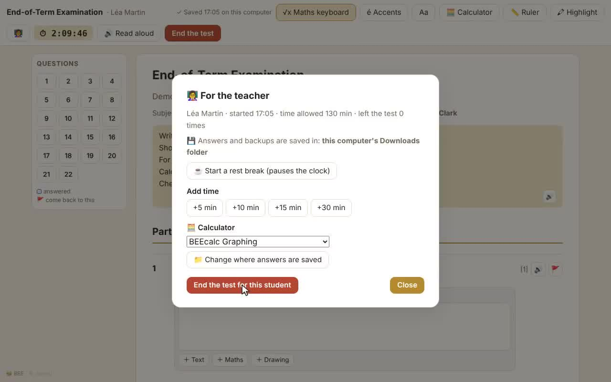
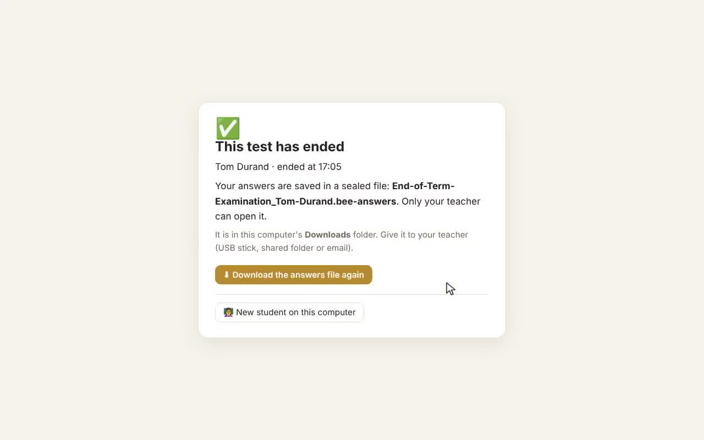
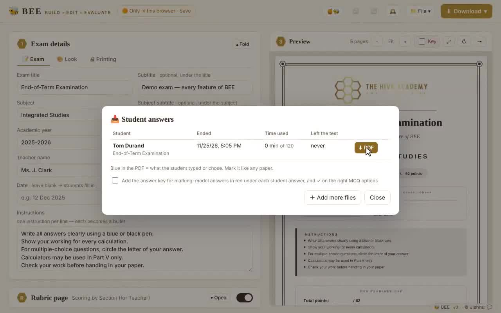

💻Exams on computers
Make the file, run the exam, mark the answers
Students can take the exam on a laptop, offline. You make the exam in BEE as usual, then download one file for the laptops. Chrome or Edge on the student laptops works best.
Make the student file
⬇ Download → 💻 Computer version
Switch off 🌱 Basic mode if you don't see it. Choose:
- 💻 Students answer on the computer, or 🔊 Read-aloud only (the paper on screen, read aloud; students write on the printed paper).
- The time, extra time, the reading voice and the version (A–D).
- Read aloud (turn it off for reading tests), your own voice, the drawing pad and the calculator.
- The accommodations students may switch on: coloured overlay, reading ruler, wider spacing, highlighter, rest breaks.
Then click ⬇ Download the student file

▶ clipTwo codes
| Code | Who | What for |
|---|---|---|
| Start code (8 characters) | Give it to students when the exam starts | Opens the questions. Without it the file shows nothing. |
| Teacher code (6 digits) | Keep it to yourself | Unlocks a locked test, adds time, ends the test, changes the calculator. |
🖨 Invigilator sheet (PDF) prints both codes for whoever runs the room.
During the exam
Students open the file
Put the file on each laptop, for example with a USB stick. Students double-click it, type their name and the start code, and the test opens full screen.
Answers save on the laptop every few seconds. If a laptop fails, Carry on from a backup continues on another one.

▶ clipLeaving the test locks it
If a student leaves the test window, it beeps and locks: Put your hand up and call your teacher. Type the teacher code to unlock it. The clock keeps running, and each exit is listed in the report.
Shortcut keys lock it too. Pressing Cmd (Mac), the Windows key or Ctrl, alone or with any other key, locks the test at once. So Cmd+Space, Cmd+Tab, Ctrl+C and the like all lock it.

▶ clipThe 👩🏫 teacher menu
Click 👩🏫 on the student's screen and type the teacher code to:
- add time (+5 to +30 minutes) or start a rest break (it pauses the clock),
- switch the calculator on, change it or take it away,
- change where answers are saved (a USB stick, a shared folder),
- end the test for this student.

▶ clipThe end of the test
End the test → an answers file
The student clicks End the test. BEE lists the questions they haven't answered, and asks once more. When time is up, the screen asks them to raise their hand: type the teacher code, then add time or finish.
The answers are saved as one sealed .bee-answers file, in Downloads unless you chose another folder.

▶ clipMark the answers
⬇ Download → 📥 Student answers
Collect the answer files, then in BEE choose 📥 Student answers and select them all. For each student you see when they ended, the time used and how often they left the test.
Click ⬇ PDF: the paper with the student's answers in blue. Tick Add the answer key for marking to see the model answers under theirs. ⬇ All PDFs (ZIP) downloads the whole class.

▶ clip